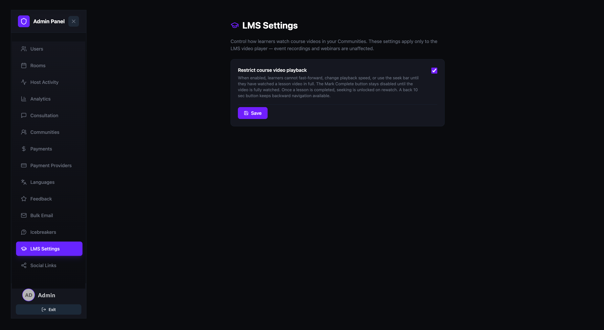
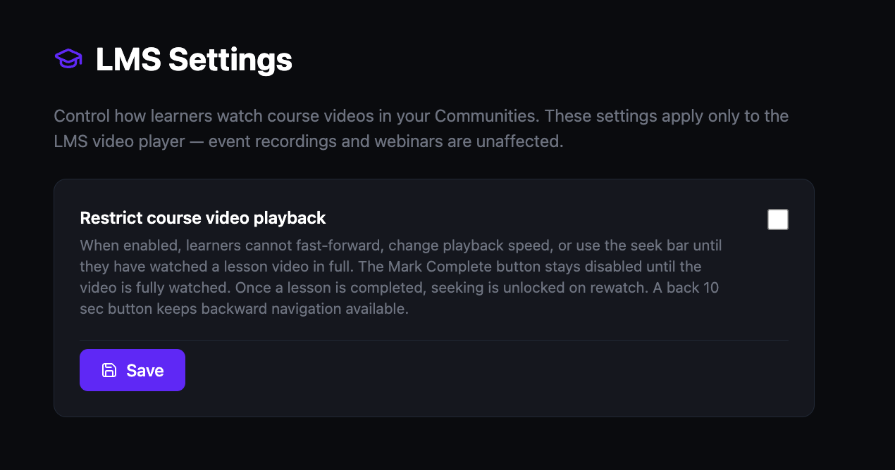

Configure LMS settings
Control how learners watch course videos in your Communities. These settings apply only to the LMS video player — event recordings and webinars are unaffected.
Open the LMS Settings page
- Open the Admin Panel.
- Click LMS Settings in the left sidebar.

Restrict course video playback
When enabled, this setting prevents learners from skipping ahead in course videos. It enforces a structured viewing experience so learners must watch each lesson in full before progressing.
- Check the Restrict course video playback checkbox to enable the restriction.
- Click Save to apply the change.
When this setting is active:
- Learners cannot fast-forward, change playback speed, or use the seek bar until they have watched the lesson video in full.
- The Mark Complete button stays disabled until the video is fully watched.
- Once a lesson is completed, seeking is unlocked on rewatch.
- A back 10 sec button remains available at all times for backward navigation.
Uncheck the box and click Save to remove the restriction and allow free video navigation.
